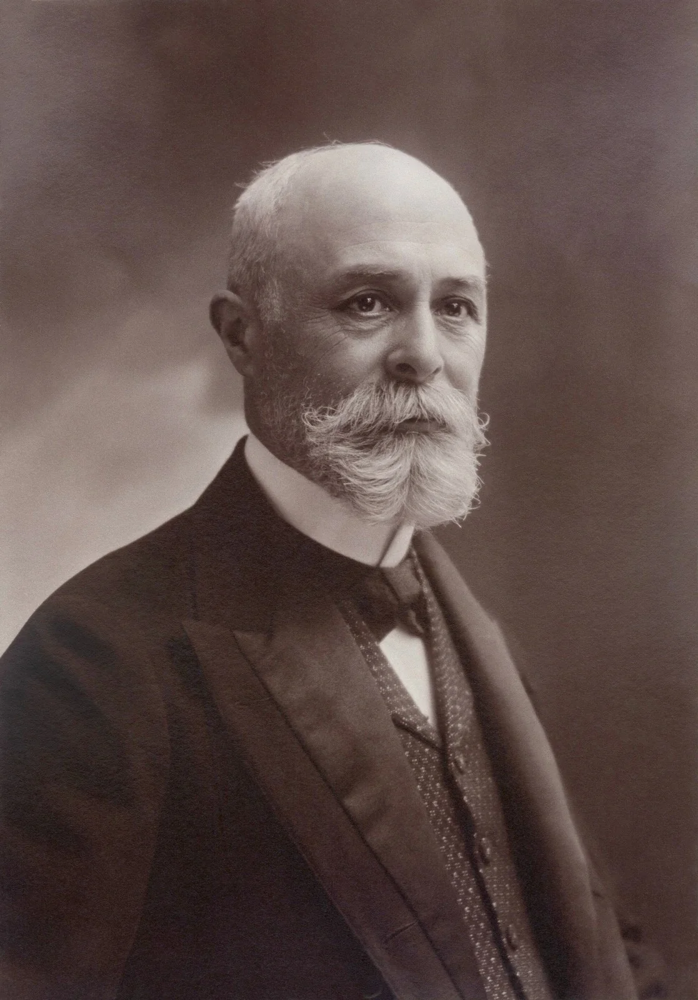
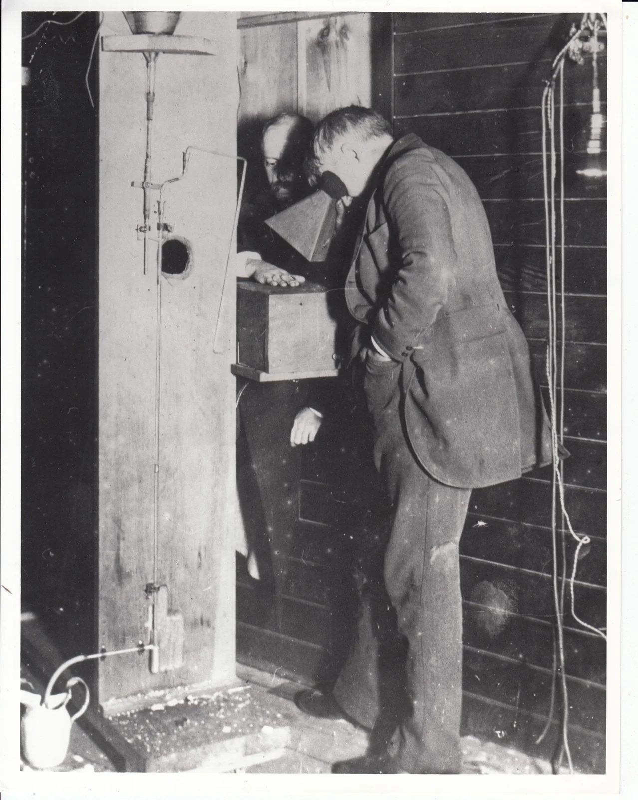
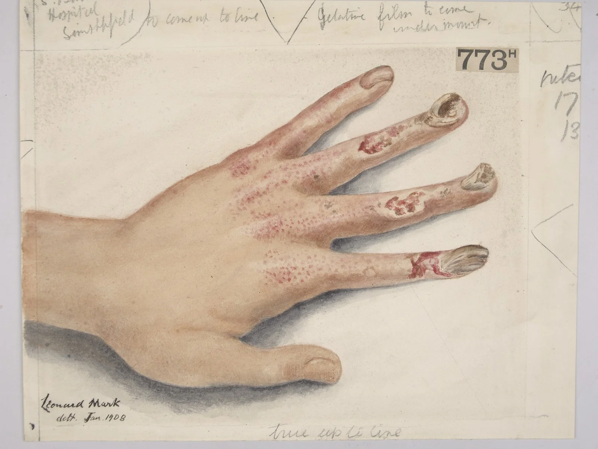
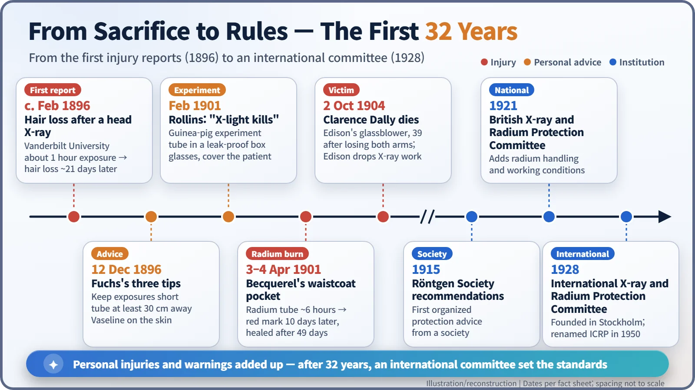
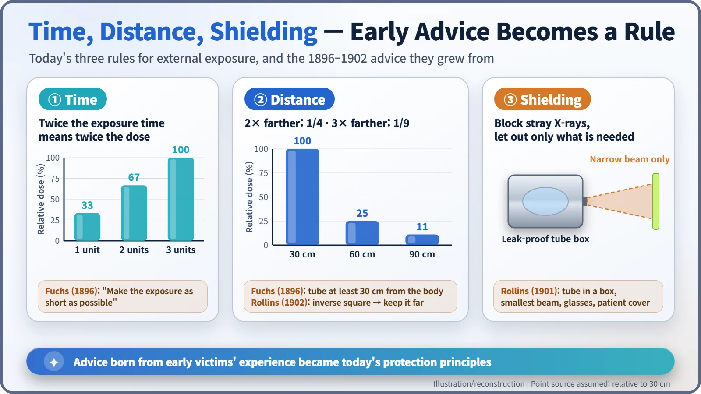

Nuclear History · 019
A Red Mark from a Waistcoat Pocket — Early Radiation Injuries and the Birth of Radiation Protection
A radium tube in Becquerel's pocket, a glassblower who tested X-ray tubes with his own hand, and the 32 years it took to turn painful lessons into international rules.
Within months of the discovery of X-rays in 1896, people who worked with them began to suffer burns, hair loss and, later, cancer. A few pioneers wrote the first safety advice, while others, from Henri Becquerel to Edison's glassblower Clarence Dally, paid for the lesson with their skin and even their lives. By 1928 those hard lessons had become an international protection committee, the forerunner of today's ICRP.
A burn nobody could see
On 13 April 1901, in Paris, the physicist Henri Becquerel (1852–1908) noticed a strange red mark on his skin. He had not touched anything hot. The culprit had been in his waistcoat pocket ten days earlier: on 3 and 4 April he had carried a small sealed glass tube of radium there for about six hours in total. The mark darkened, the skin peeled away on 24 April, and the wound did not close until 22 May, leaving a scar. It had taken 49 days from exposure to healing, a burn caused by something nobody could see. [1]

When anyone could switch on X-rays
After Röntgen announced X-rays at the turn of 1896, anyone with an induction coil and a discharge tube could make them. Demonstrators routinely held their own hands in front of a fluorescent screen to check that a tube was working. If you could see your bones, the tube was fine.
The trouble started almost at once. Around February 1896, at Vanderbilt University in Tennessee, the dean of the medical school had his head X-rayed for about an hour; some 21 days later the hair over that patch fell out. In August the trade journal Electrical Review reported that a New York demonstrator, Herbert Hawks, had swollen, burned hands, nails that had stopped growing and burns on his chest. [2]
Not everyone blamed the rays. Some, Nikola Tesla among them, suspected ozone or electricity around the tube. So late in 1896 the American engineer Elihu Thomson (1853–1937) deliberately exposed the index finger of his left hand for 30 minutes a day over several days and recorded the redness, swelling and pain that followed. A 1902 review by the Boston surgeon E. A. Codman counted 88 published X-ray injuries, and 55 of them dated from 1896 alone. [2] [3]
"Keep it short, keep it away": the first warnings
On 12 December 1896 Wolfram Conrad Fuchs (1865–1907; some sources give 1908), a German-born engineer who ran an X-ray laboratory in Chicago, published three tips in the Western Electrician: "Make the exposure as short as possible"; do not place the tube closer than 12 inches (30 cm) to the body; and rub the skin with Vaseline. The Vaseline did nothing useful, but the first two pieces of advice still hold. [5]
A more scientific warning came from a Boston dentist, William Herbert Rollins (1852–1929). In February 1901 he exposed two guinea pigs to X-rays for two hours inside grounded metal boxes; they died 8 and 11 days later. He recommended three precautions:
- keep the X-ray tube in a box that lets no radiation escape except the smallest cone of rays needed;
- have anyone using a fluoroscope wear glasses that block the rays;
- cover the patient, leaving only the area being examined exposed.
It reads like modern advice, yet in 1902 Rollins complained that his warnings were being ignored by industry and colleagues alike. [3] [6]
Pierre Curie offered his own arm
Becquerel's burn is not hearsay. It is described in a paper he wrote with Pierre Curie (1859–1906), "Action physiologique des rayons du radium" ("The physiological action of radium rays"), presented to the French Academy of Sciences on 3 June 1901. In the same paper Curie reported strapping a radium sample, roughly 5,000 times as active as metallic uranium, against his arm through a thin sheet for about ten hours. About 6 cm² of skin turned red; around day 20 a crust formed and then an open wound; on day 52 a patch of about 1 cm² still had not healed. [1]
That same power to destroy tissue soon caught doctors' attention. The discovery of a hazard became the starting point for radium therapy.
Clarence Dally, Edison's glassblower
In the United States the heaviest price was paid by Clarence Madison Dally (1865–1904), a glassblower in Thomas Edison's laboratory. In 1896 the Edison lab built a fluoroscope with a calcium tungstate screen that gave sharper images than earlier screens, and Dally helped make and test the X-ray tubes. Being right-handed, he reportedly held his left hand in the beam to check them. [4]

By about 1900 damage to his hands and face forced him to take time off. In 1902 a sore on his left wrist failed to heal despite several skin grafts, and his left hand was amputated. He then lost four fingers of his right hand and, eventually, both arms; sources differ on the exact dates. Dally died of cancer on 2 October 1904, aged 39. He is often described as the first American to die from X-ray exposure. "Don't talk to me about X-rays; I am afraid of them," Edison told the New York World in 1903, and he gave up X-ray research. [2] [4]

Thirty-two years from victims to rules
As the injuries mounted, individual warnings turned into collective rules. In 1915 the British Röntgen Society issued protection recommendations, and in 1921 the British X-ray and Radium Protection Committee published advice that also covered radium handling and working conditions.
Then, in 1928, the Second International Congress of Radiology in Stockholm set up the International X-ray and Radium Protection Committee. Its chairman was Rolf Sievert, whose name now lives on in the sievert, the unit of radiation dose. Restructured in 1950, the committee became the International Commission on Radiological Protection (ICRP), whose recommendations underpin radiation safety standards around the world. [7]

Time, distance, shielding
In nuclear power plants and hospital X-ray rooms alike, protection still comes down to three words: time (shorten the exposure), distance (stay farther away) and shielding (put lead or concrete in between). Distance is especially powerful: from a small source, doubling your distance cuts the dose to a quarter, and tripling it cuts the dose to a ninth. In 1902 Rollins himself cited this inverse-square law when he advised keeping the source well away from the patient. In that sense, the advice of Fuchs and Rollins is still at work. [3]

One caution, though. The early victims put unprotected hands into strong beams day after day, for years. That is a completely different scale of exposure from today's regulated medical examinations or occupational doses. What Becquerel's red mark and Dally's sacrifice left behind was not fear but a habit: measure it, reduce it, block it.